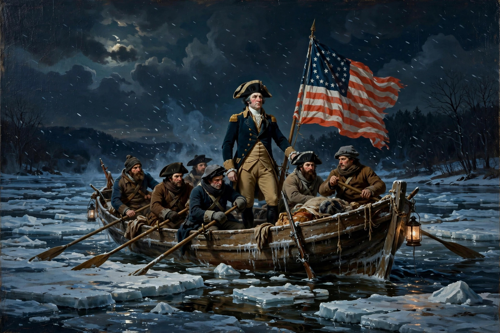

From Wikipedia, the free encyclopedia
| American Revolution | |
|---|---|
| Date | 1765–1783 (political revolution); war 1775–1783 |
| Location | Eastern North America, the Atlantic, and the Caribbean |
| Result | American independence; Treaty of Paris (1783) |
| Participants | Thirteen Colonies (later the United States), Great Britain, France, Spain, the Netherlands |

The American Revolution (1765–1783) was a political and ideological upheaval in British North America in which the Thirteen Colonies rejected British rule, won independence in the American Revolutionary War, and founded the United States of America. Driven by grievances over taxation without representation, restrictions on trade and settlement, and disputes over parliamentary authority, the revolutionaries drew on Enlightenment ideas about natural rights, consent of the governed, and republican government.
After the French and Indian War ended in 1763, Britain sought to have the colonies share the cost of their defense and the empire's war debt. The Stamp Act of 1765, the Townshend Acts, and the Tea Act provoked protests, boycotts, and episodes such as the Boston Massacre of 1770 and the Boston Tea Party of 1773. Parliament answered with the Coercive Acts—called the Intolerable Acts in America—prompting the colonies to convene the First Continental Congress in 1774.
Fighting began at Lexington and Concord on April 19, 1775. The Second Continental Congress created the Continental Army under George Washington and, on July 4, 1776, adopted the Declaration of Independence. Early British successes, including the capture of New York City, were balanced by American victories at Trenton, Princeton, and Saratoga. The Saratoga victory of 1777 persuaded France to ally openly with the United States in 1778; Spain and the Netherlands later joined the war against Britain.
The conflict shifted south after 1778. The Franco-American victory at Yorktown in 1781, where Lord Cornwallis surrendered his army, effectively ended major fighting in North America. The Treaty of Paris, signed in 1783, recognized American independence and set the new nation's boundaries from the Atlantic to the Mississippi River.
The state governments wrote new constitutions during the war, expanding republican government and, in some cases, broadening the franchise for white men. The Articles of Confederation, ratified in 1781, proved too weak to manage finance and commerce effectively, leading to the Constitutional Convention of 1787 and the federal Constitution, which took effect in 1789. The Bill of Rights followed in 1791.
The Revolution secured independence but left slavery legally intact, though northern states began gradual emancipation. Native American nations, many of which had allied with Britain, lost land as American settlement pushed westward. Loyalists numbered perhaps a fifth of the white population; tens of thousands emigrated to Canada and other parts of the British Empire. The Revolution's ideals of liberty and equality influenced later movements, including the French Revolution and independence movements in Latin America, and continue to frame debates about American national identity.